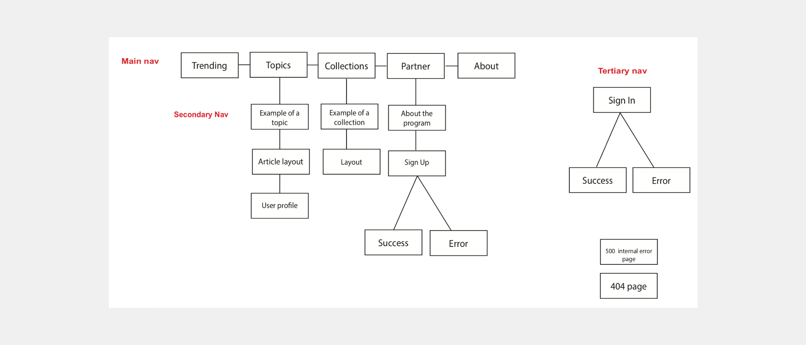
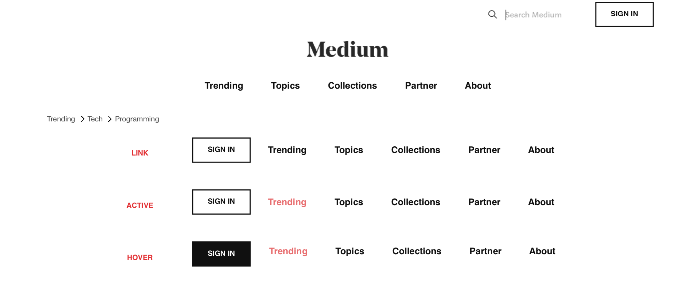
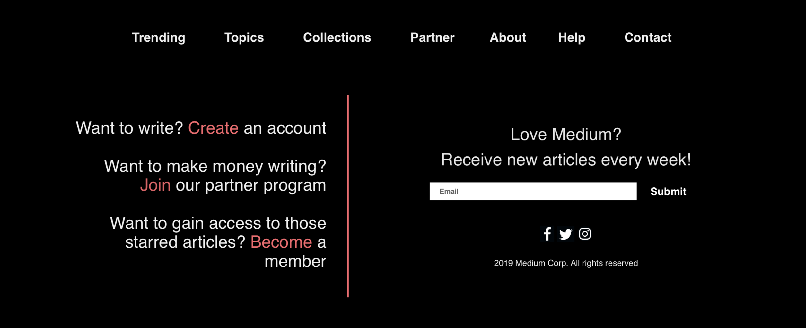

Project Overview
Medium is a social content sharing and publishing platform. Founded by one of the co-founders of Twitter, Evan Williams describes Medium as “a place for ideas that are longer than 500 characters.” Medium champions a unique subscription model in which members pay a $5 monthly fee to gain unlimited access to all of Medium’s articles. In return, these subscription fees are directly returned to the writers based on the level of engagement from the community in the form of “claps” (comparable to a like button). Medium is doing away with the outdated ad payment model, and paying writers based on the quality of their ideas. This subscription model is Medium’s competitive advantage, and spreading awareness of this model and vision is the focus of my redesign concept.
My Role
SWOT Analysis, Compeitive Analysis, Branding, Wireframes, Component Development, Website Development, Responsive Mobile & Tablet
Goals
The goal of this redesign concept is to grow participation in Medium’s Partner Program and Membership Subscription. To accomplish this goal, I identified 3 objectives:
- Grow Medium’s Paid Membership reader base
- Grow profits of writers in the Medium Program
- Increase the quality of Medium’s content, and encourage the spread of ideas and engagement site’s content
SWOT Analysis
| Internal | Strengths | Weaknesses |
|---|---|---|
|
|
|
| External | Opportunities | Threats |
|
|
Sitemap
Branding
Wireframes
Header Wireframe
The current navigation features 9 different categories and 11 links. I condensed the amount of links to 5. The trending page will feature popular articles in the major categories, and these categories can be selected by the user if they are logged into an account. Topics will feature all the different categories with a search feature for easy access. Collections is a specific feature within Medium in which users can make a publication and collaborate with other writers. Partner will explain Medium's Partner Program and memembership fees. About explains Medium's mission and goals. Currently this link is located at the bottom, but I included it in the primary navigation for easier access.
Footer Wireframe
The tertiary navigation includes the primary navigation and Help and Contact links. The subscription form serves to encourages more readers every month and to increases enagement with featured content. The goal is to convert these readers to paid members. The links to social media are intended to increase engagement with Medium across all platforms, which fits with the profile of the target audience because they are technically competent and heavy on social media usage. The call to action contains action verbs which link to ways that the user can get involved, either as a writer or reader or both. This is included to reach the goal of gaining more readers and more quality content.
BEM Components
I utilized the BEM system to identity patterns in my design and translated these patterns into reusable components. The components below streamlined my front-end development, making my code clean, readable, and reusable. I also included the naming conventions and responsive designs for tablet and mobile.